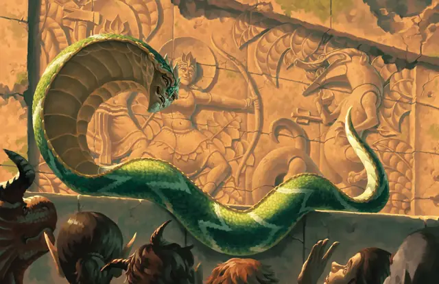

Охранная нага
Guardian Naga
Большой Небожитель, Принципиальный Добрый

Класс Защиты 18 Инициатива +4 (14)
Хиты 136 (16к10 + 48)
Скорость 40 футов, Плавания 40 футов, Лазания 40 футов
| мод | спас | ||
|---|---|---|---|
| СИЛ | 19 | +4 | +4 |
| ЛОВ | 18 | +4 | +8 |
| ТЕЛ | 16 | +3 | +7 |
| мод | спас | ||
|---|---|---|---|
| ИНТ | 16 | +3 | +7 |
| МДР | 19 | +4 | +8 |
| ХАР | 18 | +4 | +8 |
Иммунитеты Яд; Опутанный, Отравленный, Очарованный, Парализованный
Чувства Тёмное зрение 60 футов, пассивное Восприятие 14
Языки Общий, Небесный
Опасность 10 (5 900 опыта; БВ +4)
Особенности
Восстановление небожителя. Спустя 1к6 дней после смерти нага возрождается со всеми Хитами, если на её останки не сотворено заклинание Рассеивание зла и добра.
Действия
Мультиатака. Нага совершает две атаки Укусом. Она может заменить любую атаку на использование Ядовитого плевка.
Укус. Бросок рукопашной атаки: +8, досягаемость 10 фт. Попадание: 17 (2к12 + 4) Колющего урона плюс 22 (4к10) урона Ядом.
Ядовитый плевок. Спасбросок Телосложения: Сл 16, одно видимое нагой существо в 60 футах. Провал: 31 (7к8) урона Ядом, и цель Ослеплена до начала следующего хода наги. Успех: Только половина урона.
Сотворение заклинаний. Нага сотворяет одно из следующих заклинаний (заклинательная характеристика — Мудрость, Сл спасброска заклинаний 16):
Неограниченно: Чудотворство
1/день каждое: Гейс, Истинный взор, Лечение ран, Небесный огонь, Подсматривание
Бонус мастерства +4
Среда обитания Леса, Пустыня, Верхние планы
Сокровища Реликварные
Охранная нага
Стойкая змееподобная хранительница знаний
Охранные наги — бессмертные учёные змеи с совершенной памятью. Они собирают истории и предания народов тех мест, где живут, оберегают их культурное наследие и слово в слово передают его новым поколениям. После гибели цивилизаций уцелевшие охранные наги порой продолжают жить в оставшихся руинах и хранить истории, чтобы память о прошлом продолжала существовать дальше.
Совершите бросок по таблице «Знание охранной наги» для вдохновения или выберите сами, что знает нага.
Знание охранной наги
| 1к8 | Охранная нага помнит... |
| 1 | Последние слова древнего мудреца или предводителя. |
| 2 | Местонахождение тайного города или континента. |
| 3 | Магическое слово, пароль или ответ на загадку. |
| 4 | Имена всех, кто рассказывал ей истории. |
| 5 | Забытый ритуал или заклинание. |
| 6 | Рецепты с использованием местных ингредиентов. |
| 7 | Истории о забытых богах и местных духах. |
| 8 | Уязвимости легендарного чудовища. |